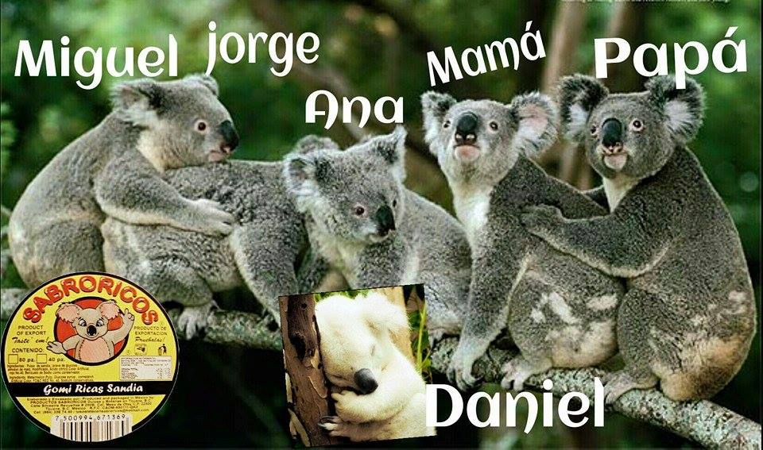

Los fundadores de esta gran empresa de sabrosos dulces, iniciaron en la década de los 70 en la ciudad de tijuana, entrando a la industria de los dulces con aproximadamente 10 productos, como saladitos con chile, sal, limón, al igual con el chamoy. sus clientes potenciales, eran dulcerias o tiendas establecidas, conforme se fue avanzando, fue incrementando la variedad de productos y la calidad de sabor haciendo que los dulces sabroricos cruzaran fronteras.
Tras pasar a manos de el actual dueño de la empresa, Miguel Camacho, modernizó la empresa, poniendo una mejor calidad en sabor y presentación al igual, registrando la marca de manera oficial y estableciendo una fábrica. Adoptando a un Koala como la mascota de Saladitos Sabroricoss
1
En grandes dulcerías y Cines de la región puedes encontrar los productos deliciosos que te encantan, disponibles siempre para disfrutar mientras ves una película o para algún evento.
2
La calidad y sabor de los productos hablan por sí solos, y nos han abierto puertas al extranjero, donde actualmente se distribuyen productos de la deliciosa gama de Saladitos Sabroricos.
3
Los productos de Saladitos Sabroricos más deliciosos que nunca, ahora disponibles en venta individual a granel para todas las personas, también muy pronto en tiendas de autoservicio.
En Saladitos Sabroricos nos adaptamos a tus necesidades y estamos interesados en escucharte, contactanos para mas informacion, o ve directamente a la sección de COTIZA.